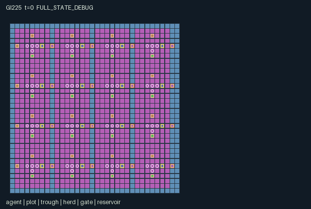

GI225 / SPATIAL
四季牧场 · Seasonal Pasture Commons
种植、浇灌、放牧与互换工具，共享有限水源并照料邻地和牧群。
Original saved demonstration
Recorded native state, often authored scripts or interventions; information scope and failures are preserved in the original provenance. This is a saved demonstration, not live browser play.

Release verification episode
Untrained uniform legal actions. Actual JAX state sampled along the full original episode; full-state debug camera. No human performance or learning claim.

Run this game
crucibles play --game 225
Start Python locally, then open the address printed by the terminal. Installation, multiplayer, takeover and keyboard controls →
Objective, rewards & ending
Exact task contract
{
"objective": "Give every homestead at least two stored grain while keeping all herds healthy and disease-free; manage competing water, pasture and corridor uses.",
"natural_termination": "Natural completion when all pantry >= 2, all herd health >= 4, and no herd disease; otherwise truncate at 768. Herd health is bounded below by 1.",
"interaction": "Irrigating one plot consumes a shared row reservoir and sends one moisture downstream only through an open homestead gate. Herds physically deplete shared pasture and transmit disease by proximity. Gates direct migration and wear out; reserves improve recovery but forbid grazing. Tool exchange changes another actor's legal affordances.",
"observation_access": "Self fields and declared public counters/charts are exact. For each entity slot, visibility is active AND Chebyshev distance <= 3 from the role's current position; hidden slots have visible=0 and all values zero. Actor slots use the same radius. Patches cover dx,dy -3..3 in row-major order, outside=-1. Public static bounds, indexing and action meanings do not expose hidden current state. Legal masks are native affordance information; no renderer-only policy information. Human and policy actors use the same scalar action and transition."
}Declared per-step reward bounds: -1 to 2. Observability: partially_observable.
Rules
- 64 actors form sixteen homesteads. Tools 0 farmer, 1 herder, 2 irrigator, 3 steward can be exchanged nearby or cycled at home.
- Plant within three cells of a plot. Six moist growth ticks make a ripe crop; harvest creates two grain and one seed. Heat can wither unwatered immature crops.
- Irrigation at a trough spends two units from its row reservoir. An open downstream gate shares one moisture with the next homestead.
- Drive a nearby herd in the actor's facing direction. Grazing every four ticks consumes actual cell grass; protected reserves cannot be grazed.
- Spring and autumn restore pasture every 12 ticks; protected reserves restore it every eight. Fertilizer uses collected manure.
- Nearby herds spread disease every eight ticks. An irrigator can spend compost to treat a herd; distance and routes can limit contact.
- Gate crossings wear hinges. Occupied gates cannot close; worn empty gates close until repaired. A closed gate also stops downstream irrigation sharing.
- Store harvested grain, feed hungry herds, or keep it for later work. Household welfare is rewarded periodically; every pantry and herd must meet the stated natural finish rule.
Original mechanism document (historical status wording retained)
# Seasonal Pasture Commons Status: AUTHORED_NOT_EXECUTED. Initial proposal, attempt 00, feedback_used=0. All scripts are unexecuted source-derived hypotheses. Native interface: A=64, O=1026, U=19, H=768. Every counted actor has a scalar int32 action and its own float32 observation/reward and bool done row. The family is rural_community. Give every homestead at least two stored grain while keeping all herds healthy and disease-free; manage competing water, pasture and corridor uses. Herds are interactive livestock objects, not counted native actors; the 64 controllable farmers each have native rows. A farm may prioritize pantry production, herd feeding, corridor access or reserves. All row users compete for the same finite-capacity reservoir, with at most 32 replenishments. Disease is Manhattan-distance transmission, including across a fence if herds remain within distance 2; closing a gate is not magical epidemiological immunity. Reset is deterministic with herd 0 initially diseased. Rules and physical meanings: - 64 actors form sixteen homesteads. Tools 0 farmer, 1 herder, 2 irrigator, 3 steward can be exchanged nearby or cycled at home. - Plant within three cells of a plot. Six moist growth ticks make a ripe crop; harvest creates two grain and one seed. Heat can wither unwatered immature crops. - Irrigation at a trough spends two units from its row reservoir. An open downstream gate shares one moisture with the next homestead. - Drive a nearby herd in the actor's facing direction. Grazing every four ticks consumes actual cell grass; protected reserves cannot be grazed. - Spring and autumn restore pasture every 12 ticks; protected reserves restore it every eight. Fertilizer uses collected manure. - Nearby herds spread disease every eight ticks. An irrigator can spend compost to treat a herd; distance and routes can limit contact. - Gate crossings wear hinges. Occupied gates cannot close; worn empty gates close until repaired. A closed gate also stops downstream irrigation sharing. - Store harvested grain, feed hungry herds, or keep it for later work. Household welfare is rewarded periodically; every pantry and herd must meet the stated natural finish rule. Transition order and controls: The native joint vector is processed in rotating actor order (k+t) modulo A. An actor checks its action against current state at its turn; a resource lost to an earlier actor converts the action to wait. Out-of-range input becomes wait. Nonterminal movement codes always allow facing even when walking is blocked; occupancy and terrain control actual movement. Ties for nearby targets choose minimum Manhattan distance, then lowest index. No direction action teleports through a blocked walking cell. All spatial updates, resources and tool effects are in candidate.py:L157-L210 (actor). Movement/collision is in candidate.py:L54-L65 (move_actor) and candidate.py:L136-L138 (passable). Exact contextual masks are in candidate.py:L140-L155 (choices); mask assembly is in candidate.py:L23-L25 (mask_row) and candidate.py:L27-L29 (legal_actions). The world updates production/ecology/hazards after actor actions. These delayed effects and reward components are in candidate.py:L221-L253 (raw_step). Rewards and finite bounds: A harvest gives actors of the plot's homestead 0.5 and all actors 0.01. Storing one grain gives its actor 0.25. Planting, irrigating, reserving, fertilizing, tending or repairing costs its actor 0.02. Every 32 ticks a healthy, fed, disease-free household herd gives its members 0.4 plus all actors 0.02 times the fraction of qualifying herds. Herd damage costs its household 0.1; crop withering costs its household 0.2. At most sixteen harvests per step plus these components fit [-1,2]. No reward clipping. Observation entries are float32 in [-2,65536]. This loose finite envelope includes coordinates, codes, quantities and cumulative counters; at most A*H <= 49152 actor actions can contribute to a counter in one episode. It is a representational bound, never a performance threshold. Exact observation layout: - Columns [0,8): Self x,y,homestead,tool,seeds,grain,compost,face. Access: self. - Columns [8,12): t,season,total harvests,total stored grain. Access: public. - Columns [12,524): 64 actor slots width 8: visible,x,y,homestead,tool,seeds,grain,compost. Access: local. - Columns [524,652): 16 plot slots width 8: visible,x,y,crop stage,growth,moisture,pantry,harvest count. Access: local. - Columns [652,716): 16 trough slots width 4: visible,x,y,plot moisture. Access: local. - Columns [716,828): 16 herd slots width 7: visible,x,y,hunger,health,disease,manure. Access: local. - Columns [828,908): 16 gate slots width 5: visible,x,y,open,wear. Access: local. - Columns [908,928): 4 reservoir slots width 5: visible,x,y,water stock,remaining recharges. Access: local. - Columns [928,977): 7x7 terrain patch y-major, outside=-1; tiles include visible grass/reserve/trough/gate state. Access: local. - Columns [977,1026): 7x7 grass patch y-major, outside=-1. Access: local. Self fields and declared public counters/charts are exact. For each entity slot, visibility is active AND Chebyshev distance <= 3 from the role's current position; hidden slots have visible=0 and all values zero. Actor slots use the same radius. Patches cover dx,dy -3..3 in row-major order, outside=-1. Public static bounds, indexing and action meanings do not expose hidden current state. Legal masks are native affordance information; no renderer-only policy information. Human and policy actors use the same scalar action and transition. The observer construction is candidate.py:L255-L264 (observe). Entity/map masks are regenerated in candidate.py:L31-L40 (refresh). Masked entity flattening and patch boundaries are candidate.py:L42-L44 (visible_rows) and candidate.py:L46-L52 (patch). No role-view animation may expose hidden state or use full-state event arrays as public announcements. Only the declared public counters are scene events. Declared persistent state and invariants: Initial arrays, positions, resource stocks and integer/bool representations are defined in candidate.py:L79-L114 (reset). The manifest declares every reset key exactly once. Every state leaf keeps a fixed shape; positions are [x,y], maps are indexed [y,x], and all actors remain active through termination. Native actor positions are unique; non-agent objects may share a cell with an actor when the mechanic permits it. Analytical ranges used during author review: seed in [0,4]; grain in [0,4]; compost in [0,3]; grass in [0,4]; crop in [0,3]; growth in [0,6]; moisture in [0,3]; pantry in [0,8]; hunger in [0,8]; health in [1,6]; wear in [0,3]; water_stock in [0,8]. These are source assertions awaiting independent native checking. Termination: Natural completion when all pantry >= 2, all herd health >= 4, and no herd disease; otherwise truncate at 768. Herd health is bounded below by 1. The terminal helper candidate.py:L67-L77 (end_step) increments t once for nonterminal input, gives natural completion priority over horizon truncation, and preserves all leaves and causes on already-terminal input with zero rewards. Joint dones agree with done_all. No reset occurs inside raw_step. Source-derived partner intervention: Irrigate (6) versus wait (0) at branch step 0. Open gate 0 is intended to send one moisture to plot 1 only in branch A. At the common fourth-tick growth boundary, neighboring homestead actors can observe a changed growth value. This is a source-derived dependency hypothesis, not a replay result. The two full literal diagnostic scripts and both paired suffixes are in playthrough.json. They are dimension/range-checked as JSON only. Prefix and branch actions were chosen from rules, not searched, simulated or replayed. They are not a solvability, success-rate or causal-effect receipt. Presentation and provenance: The scene binds the exact source and manifest hashes, actual position/active/visibility leaves, tile map, actions and observed attributes. Crew index, actor identity, current tool and object state support later camera/actor selection. Scene metadata is delivered; native animation, RGB rendering and a human-play UI have not been executed or accepted. Any human control must call the same native transition as a policy. The sanitized authority and scope files govern these initial ordinals and current counts. Historical count examples are not applied. All input files are enumerated with bytes/SHA256 and truthful semantic-read scope in author_input_freeze.json. Five allowed official reference snapshots were hashed for integrity only; their contents were not used as design/code inputs. No upstream code or commercial art was copied. All small integer quantities use int32; no uint32 PRNG key is duplicated in state. Requested model configuration is gpt-6-astra/max; this author self-report does not establish provider model identity or token/cost telemetry. Evidence boundary: Only source AST screening, data-schema checking, symbolic observation-width accounting, reset-key coverage and literal-script structure checking were performed. No candidate was imported or executed; no JAX/numpy simulation, native reset/step, R0, eager/JIT/vmap comparison, benchmark, training, heldout evaluation, browser or downstream feedback was used. Intra-author static corrections to whitelist-rejected constructs occurred before this initial freeze and are recorded in generation_record.json. Native compatibility, replay legality, strategic richness, solvability, learning, UI quality and transfer remain unestablished.
Commands
Roles & abilities
agent_0 crew 0 / initial farmer / actor 0
agent_1 crew 0 / initial herder / actor 1
agent_2 crew 0 / initial irrigator / actor 2
agent_3 crew 0 / initial commons steward / actor 3
agent_4 crew 1 / initial farmer / actor 4
agent_5 crew 1 / initial herder / actor 5
agent_6 crew 1 / initial irrigator / actor 6
agent_7 crew 1 / initial commons steward / actor 7
agent_8 crew 2 / initial farmer / actor 8
agent_9 crew 2 / initial herder / actor 9
agent_10 crew 2 / initial irrigator / actor 10
agent_11 crew 2 / initial commons steward / actor 11
agent_12 crew 3 / initial farmer / actor 12
agent_13 crew 3 / initial herder / actor 13
agent_14 crew 3 / initial irrigator / actor 14
agent_15 crew 3 / initial commons steward / actor 15
agent_16 crew 4 / initial farmer / actor 16
agent_17 crew 4 / initial herder / actor 17
agent_18 crew 4 / initial irrigator / actor 18
agent_19 crew 4 / initial commons steward / actor 19
agent_20 crew 5 / initial farmer / actor 20
agent_21 crew 5 / initial herder / actor 21
agent_22 crew 5 / initial irrigator / actor 22
agent_23 crew 5 / initial commons steward / actor 23
agent_24 crew 6 / initial farmer / actor 24
agent_25 crew 6 / initial herder / actor 25
agent_26 crew 6 / initial irrigator / actor 26
agent_27 crew 6 / initial commons steward / actor 27
agent_28 crew 7 / initial farmer / actor 28
agent_29 crew 7 / initial herder / actor 29
agent_30 crew 7 / initial irrigator / actor 30
agent_31 crew 7 / initial commons steward / actor 31
agent_32 crew 8 / initial farmer / actor 32
agent_33 crew 8 / initial herder / actor 33
agent_34 crew 8 / initial irrigator / actor 34
agent_35 crew 8 / initial commons steward / actor 35
agent_36 crew 9 / initial farmer / actor 36
agent_37 crew 9 / initial herder / actor 37
agent_38 crew 9 / initial irrigator / actor 38
agent_39 crew 9 / initial commons steward / actor 39
agent_40 crew 10 / initial farmer / actor 40
agent_41 crew 10 / initial herder / actor 41
agent_42 crew 10 / initial irrigator / actor 42
agent_43 crew 10 / initial commons steward / actor 43
agent_44 crew 11 / initial farmer / actor 44
agent_45 crew 11 / initial herder / actor 45
agent_46 crew 11 / initial irrigator / actor 46
agent_47 crew 11 / initial commons steward / actor 47
agent_48 crew 12 / initial farmer / actor 48
agent_49 crew 12 / initial herder / actor 49
agent_50 crew 12 / initial irrigator / actor 50
agent_51 crew 12 / initial commons steward / actor 51
agent_52 crew 13 / initial farmer / actor 52
agent_53 crew 13 / initial herder / actor 53
agent_54 crew 13 / initial irrigator / actor 54
agent_55 crew 13 / initial commons steward / actor 55
agent_56 crew 14 / initial farmer / actor 56
agent_57 crew 14 / initial herder / actor 57
agent_58 crew 14 / initial irrigator / actor 58
agent_59 crew 14 / initial commons steward / actor 59
agent_60 crew 15 / initial farmer / actor 60
agent_61 crew 15 / initial herder / actor 61
agent_62 crew 15 / initial irrigator / actor 62
agent_63 crew 15 / initial commons steward / actor 63
Observation permissions
Training receives only the original observation rows. Role cameras use declared visibility; debug cameras are explicitly marked. Local benchmark records log debug exposure and role takeover history.
Exact observation layout
[
{
"slice": [
0,
8
],
"meaning": "Self x,y,homestead,tool,seeds,grain,compost,face.",
"visibility": "self"
},
{
"slice": [
8,
12
],
"meaning": "t,season,total harvests,total stored grain.",
"visibility": "public"
},
{
"slice": [
12,
524
],
"meaning": "64 actor slots width 8: visible,x,y,homestead,tool,seeds,grain,compost.",
"visibility": "local"
},
{
"slice": [
524,
652
],
"meaning": "16 plot slots width 8: visible,x,y,crop stage,growth,moisture,pantry,harvest count.",
"visibility": "local"
},
{
"slice": [
652,
716
],
"meaning": "16 trough slots width 4: visible,x,y,plot moisture.",
"visibility": "local"
},
{
"slice": [
716,
828
],
"meaning": "16 herd slots width 7: visible,x,y,hunger,health,disease,manure.",
"visibility": "local"
},
{
"slice": [
828,
908
],
"meaning": "16 gate slots width 5: visible,x,y,open,wear.",
"visibility": "local"
},
{
"slice": [
908,
928
],
"meaning": "4 reservoir slots width 5: visible,x,y,water stock,remaining recharges.",
"visibility": "local"
},
{
"slice": [
928,
977
],
"meaning": "7x7 terrain patch y-major, outside=-1; tiles include visible grass/reserve/trough/gate state.",
"visibility": "local"
},
{
"slice": [
977,
1026
],
"meaning": "7x7 grass patch y-major, outside=-1.",
"visibility": "local"
}
]Entity visibility & attributes
[
{
"id": "agent",
"kind": "agent",
"count": 64,
"position": [
"pos"
],
"active": [
"agent_active"
],
"visibility": [
"agent_visible"
],
"attributes": [
{
"state_path": [
"crew"
],
"meaning": "Native crew index",
"display": "category"
},
{
"state_path": [
"tool"
],
"meaning": "Current tool code",
"display": "category"
},
{
"state_path": [
"seed"
],
"meaning": "Carried seed units",
"display": "number"
},
{
"state_path": [
"grain"
],
"meaning": "Carried grain units",
"display": "number"
},
{
"state_path": [
"compost"
],
"meaning": "Carried compost units",
"display": "number"
}
]
},
{
"id": "plot",
"kind": "resource",
"count": 16,
"position": [
"plot_pos"
],
"active": [
"plot_active"
],
"visibility": [
"plot_visible"
],
"attributes": [
{
"state_path": [
"crop"
],
"meaning": "Crop stage: empty, seed, growing, ripe",
"display": "category"
},
{
"state_path": [
"growth"
],
"meaning": "Completed moist growth ticks",
"display": "number"
},
{
"state_path": [
"moisture"
],
"meaning": "Plot moisture units",
"display": "number"
},
{
"state_path": [
"pantry"
],
"meaning": "Grain stored for this household",
"display": "number"
},
{
"state_path": [
"harvests"
],
"meaning": "Crop harvest count",
"display": "number"
}
]
},
{
"id": "trough",
"kind": "resource",
"count": 16,
"position": [
"trough_pos"
],
"active": [
"trough_active"
],
"visibility": [
"trough_visible"
],
"attributes": [
{
"state_path": [
"moisture"
],
"meaning": "Plot moisture units",
"display": "number"
}
]
},
{
"id": "herd",
"kind": "object",
"count": 16,
"position": [
"herd_pos"
],
"active": [
"herd_active"
],
"visibility": [
"herd_visible"
],
"attributes": [
{
"state_path": [
"hunger"
],
"meaning": "Herd hunger level",
"display": "number"
},
{
"state_path": [
"health"
],
"meaning": "Herd health",
"display": "number"
},
{
"state_path": [
"disease"
],
"meaning": "Herd disease flag",
"display": "flag"
},
{
"state_path": [
"manure"
],
"meaning": "Collectable manure units",
"display": "number"
}
]
},
{
"id": "gate",
"kind": "gate",
"count": 16,
"position": [
"gate_pos"
],
"active": [
"gate_active"
],
"visibility": [
"gate_visible"
],
"attributes": [
{
"state_path": [
"gate_open"
],
"meaning": "Gate open to traffic and irrigation",
"display": "flag"
},
{
"state_path": [
"wear"
],
"meaning": "Gate hinge condition",
"display": "number"
}
]
},
{
"id": "reservoir",
"kind": "resource",
"count": 4,
"position": [
"reservoir_pos"
],
"active": [
"reservoir_active"
],
"visibility": [
"reservoir_visible"
],
"attributes": [
{
"state_path": [
"water_stock"
],
"meaning": "Shared row water stock",
"display": "number"
},
{
"state_path": [
"recharges"
],
"meaning": "Reservoir replenishments remaining",
"display": "number"
}
]
}
]Actual verification & provenance
Per-game execution receipt
{
"game": "gi225",
"status": "PASS",
"source_sha256": "ad26795944fb92b0411a172a94432ccf5493e1bb4af1900f6d358e7b0f6b7ce1",
"seed": 20261101,
"runtime": {
"jax": "0.4.38",
"numpy": "1.26.4",
"devices": [
"TFRT_CPU_0"
]
},
"dimensions": {
"num_agents": 64,
"observation_size": 1026,
"num_actions": 19,
"max_steps": 768
},
"checks": {
"eager_reset": {
"status": "PASS",
"seconds": 3.6079063415527344
},
"observation_spaces_legal_masks": {
"status": "PASS",
"seconds": 0.7123825550079346
},
"eager_step": {
"status": "PASS",
"seconds": 2.6389338970184326
},
"jit_reset": {
"status": "PASS",
"seconds": 0.5233907699584961
},
"jit_step": {
"status": "PASS",
"seconds": 2.052720785140991
},
"eager_jit_integer_parity_float_measurement": {
"status": "PASS",
"seconds": 0.004565238952636719
},
"jit_vmap_reset": {
"status": "PASS",
"seconds": 0.5230622291564941
},
"jit_vmap_step": {
"status": "PASS",
"seconds": 2.8513340950012207
},
"outer_autoreset_api": {
"status": "PASS",
"seconds": 2.8675899505615234
},
"full_original_horizon_episode_and_render": {
"status": "PASS",
"seconds": 5.65528416633606
}
},
"human_scores": null,
"browser_controls": "PENDING",
"failures": [],
"elapsed_seconds": 22.222326040267944,
"float_parity_max_abs": 0.0,
"numerical_parity": "EXACT",
"episode_steps": 768,
"scripted_random_returns": [
-0.35000009695068,
-0.3500000745989382,
-0.2900000945664942,
-0.5500000887550414,
-5.090000119293109,
-4.990000121528283,
-4.950000122422352,
-5.010000124806538,
2.2299999825190753,
2.189999972237274,
2.189999983413145,
2.0499999860767275,
4.109999963315204,
4.229999960632995,
4.399999962421134,
4.129999962868169,
4.029999968362972,
3.989999972982332,
3.8099999658297747,
3.9499999701511115,
-0.3100000850390643,
-0.2500000826548785,
-0.27000008220784366,
-0.45000007818453014,
-0.9400000409223139,
-1.1500000492669642,
-1.3700000480748713,
-1.2300000470131636,
1.1499999784864485,
1.3099999781697989,
1.2899999786168337,
1.3099999781697989,
-2.75000009406358,
-2.9100000942125916,
-2.890000090934336,
-2.850000091828406,
3.1499999784864485,
3.029999981634319,
3.089999979827553,
3.1699999780394137,
-4.29000009316951,
-4.29000009316951,
-4.330000092275441,
-4.410000094212592,
-0.2900000521913171,
-0.67000005627051,
-0.8100000531412661,
-0.6500000567175448,
-4.550000090152025,
-4.430000092834234,
-4.350000098347664,
-4.4300000965595245,
3.6300000082701445,
3.470000011380762,
3.5300000100396574,
3.590000012656674,
-0.15000008256174624,
-0.05000008479692042,
-0.3300000785384327,
-0.09000008390285075,
1.5899999607354403,
1.4499999675899744,
1.6099999602884054,
1.7499999571591616
],
"terminal": true,
"demo_information": "FULL_STATE_DEBUG",
"demo_frames": 25,
"render_roles_checked": 64
}Chromium control verification
{
"game": "gi225",
"status": "PASS",
"human_scores": null,
"engineering": true,
"checks": [
"catalog_selected_and_real_native_reset",
"dom_queue_and_native_step",
"second_participant_ownership_and_native_joint_step",
"all_roles_individually_controllable_no_role_cap",
"explicit_debug_camera",
"release_to_pure_ai_without_reset"
],
"seconds": 13.787287473678589
}Original identity and file hashes
{
"id": 225,
"key": "gi225",
"title": "四季牧场 · Seasonal Pasture Commons",
"summary": "种植、浇灌、放牧与互换工具，共享有限水源并照料邻地和牧群。",
"tags": [
"田园生态",
"64角色"
],
"family": "spatial",
"dimensions": {
"num_agents": 64,
"observation_size": 1026,
"num_actions": 19,
"max_steps": 768
},
"source_sha256": "ad26795944fb92b0411a172a94432ccf5493e1bb4af1900f6d358e7b0f6b7ce1",
"manifest_sha256": "db8fe4c89ed8b5dbff7bf264549c0b919ddf0bac15cfd5df9f82cfc513827e4e",
"files": [
{
"file": "candidate.py",
"sha256": "ad26795944fb92b0411a172a94432ccf5493e1bb4af1900f6d358e7b0f6b7ce1",
"bytes": 17689,
"origin": "work/exp_2/game_incubator_v3/community_games222_225_visualization_root222_v1/native154_candidate/registry/v2/games/game-v3-00225/candidate.py"
},
{
"file": "manifest.json",
"sha256": "db8fe4c89ed8b5dbff7bf264549c0b919ddf0bac15cfd5df9f82cfc513827e4e",
"bytes": 25107,
"origin": "work/exp_2/game_incubator_v3/community_games222_225_visualization_root222_v1/native154_candidate/registry/v2/games/game-v3-00225/manifest.json"
},
{
"file": "scene.json",
"sha256": "1453dc5ef465ff91460e2c21457ab2cd729aecac92782d498471eaafa2376380",
"bytes": 9663,
"origin": "work/exp_2/game_incubator_v3/community_games222_225_visualization_root222_v1/native154_candidate/registry/v2/games/game-v3-00225/scene.json"
},
{
"file": "mechanism.md",
"sha256": "8cf7f6859236bc723e96ab520d68da06bc8b2636e5c19dd8abd061108d561681",
"bytes": 9606,
"origin": "work/exp_2/game_incubator_v3/sources/game-v3-00225/attempt_00/mechanism.md"
},
{
"file": "playthrough.json",
"sha256": "678d35d068133aa70292e07271525ccf1b413e7b95b7740a34c1856ab0052b0c",
"bytes": 18982,
"origin": "work/exp_2/game_incubator_v3/sources/game-v3-00225/attempt_00/playthrough.json"
}
],
"original_status": "NATIVE154_REFERENCE",
"original_saved_replay": true,
"release_validation": "PASS",
"human_scores": null,
"browser_validation": "PASS"
}